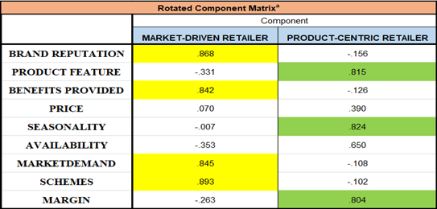
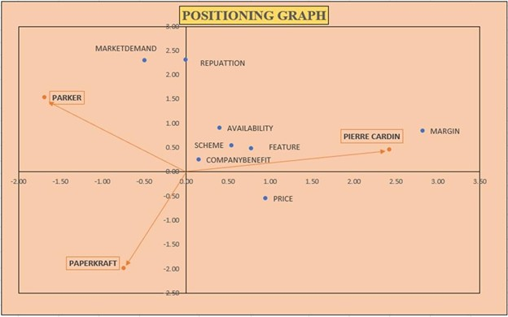
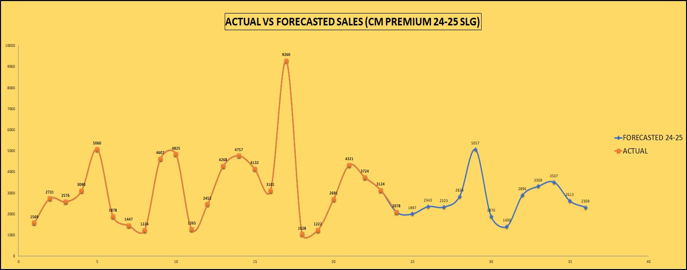

The Business Challenge
Despite the national strength of ITC's portfolio, the PAPERKRAFT brand faced a critical challenge in Siliguri: sub-optimal market demand. The objective of this 60-day Summer Internship Project was to uncover the core reasons behind this disparity by analyzing consumer awareness, identifying gaps in marketing strategies, and understanding the specific factors that influence local retailers' stocking decisions against established rivals like Parker and Pierre Cardin.
1. Factor Analysis: Retailer Segmentation
To understand distribution bottlenecks, I conducted a Factor Analysis to reduce variables and isolate the primary drivers behind retailer purchase decisions. The analysis successfully identified two distinct retailer segments:
Market-Driven Retailers
Influenced primarily by external pull: Brand reputation, promotional schemes, overarching market demand, and company-provided benefits.
Product-Driven Retailers
Influenced primarily by intrinsic attributes: Specific product features, seasonality impacts, and the direct profit margin provided.

2. Attribute-Based Perceptual Mapping (ABPM)
To visualize product positioning in the minds of consumers, I mapped PAPERKRAFT against its two main competitors (Parker and Pierre Cardin). The model accurately classified 94.5% of the data points across two significant components (Z1 and Z2), highlighting specific market gaps and areas where PAPERKRAFT could optimize its perceived value.

3. Sales Forecasting Model
To predict sales for the upcoming financial year (2024-25), a comprehensive forecasting model was developed utilizing historical sales data from FY 2013-14 to FY 2023-24. To ensure accuracy, the COVID-19 impacted period (2020-2021) was excluded to mitigate data distortion, and a seasonality adjustment was applied to account for inherent monthly fluctuations.

Strategic Recommendations & Impact
-
Product Line Optimization: Identified a critical price-sensitivity correlation; recommended expanding the product line into the INR 20-30 range to bridge the gap between mass-market and super-premium.
-
Targeted Retailer Incentives: Utilizing the Factor Analysis data, proposed tiered margin incentives specifically targeted at "Product-Driven" retailers who were resisting stocking.
-
Digital Sales Enablement: Recommended enhancing the internal SIFI app with high-quality digital assets to help sales reps better showcase PAPERKRAFT's value proposition against Parker.